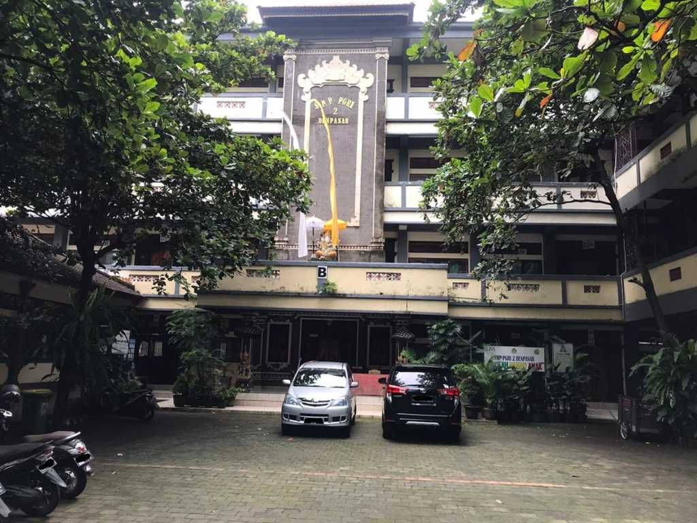

Institusi Pendidikan

SMP PGRI 2 Denpasar
Tempat beliau menimba ilmu di masa remaja.

SMA Wira Bhakti Denpasar
Masa sekolah menengah yang penuh kenangan.

Universitas Undiksha
Pusat studi akademik S1 dan S2 Sastra.